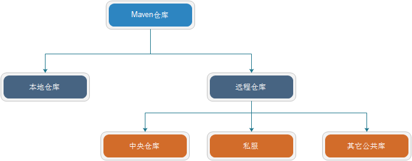
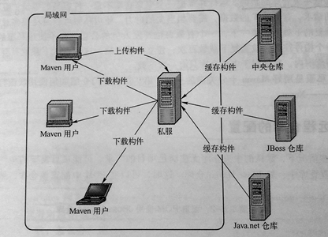

<!DOCTYPE html>
<html lang="en">
<head><meta name="generator" content="Hexo 3.8.0">
    <meta charset="utf-8">
    
    <title>
        Maven仓库 |
        
        YingLong</title>
    
    
        <meta name="keywords" content="Maven">
    
    <meta name="viewport" content="width=device-width, initial-scale=1, maximum-scale=1">
    <meta name="description" content="坐标和依赖是任何一个构件在Maven世界中的逻辑表示方式，任何一个构件都有一组坐标唯一标识，而构件的物理表示方式是文件，Maven通过仓库来统一管理这些文件。 仓库布局任何一个构件都有其唯一的坐标，根据这个坐标可以定义其在仓库中的唯一存储路径，且存储路径大致对应关系为groupId/artifactId/version/artifactId-version[-classifier].packagi">
<meta name="keywords" content="Maven">
<meta property="og:type" content="article">
<meta property="og:title" content="Maven仓库">
<meta property="og:url" content="https://yaoyinglong.github.io/Blog/Maven/Maven仓库/index.html">
<meta property="og:site_name" content="YingLong">
<meta property="og:description" content="坐标和依赖是任何一个构件在Maven世界中的逻辑表示方式，任何一个构件都有一组坐标唯一标识，而构件的物理表示方式是文件，Maven通过仓库来统一管理这些文件。 仓库布局任何一个构件都有其唯一的坐标，根据这个坐标可以定义其在仓库中的唯一存储路径，且存储路径大致对应关系为groupId/artifactId/version/artifactId-version[-classifier].packagi">
<meta property="og:locale" content="en">
<meta property="og:image" content="https://yaoyinglong.github.io/images/Maven/Maven仓库分类.png">
<meta property="og:image" content="https://yaoyinglong.github.io/images/Maven/Maven私服用途.png">
<meta property="og:updated_time" content="2019-06-27T09:26:09.589Z">
<meta name="twitter:card" content="summary">
<meta name="twitter:title" content="Maven仓库">
<meta name="twitter:description" content="坐标和依赖是任何一个构件在Maven世界中的逻辑表示方式，任何一个构件都有一组坐标唯一标识，而构件的物理表示方式是文件，Maven通过仓库来统一管理这些文件。 仓库布局任何一个构件都有其唯一的坐标，根据这个坐标可以定义其在仓库中的唯一存储路径，且存储路径大致对应关系为groupId/artifactId/version/artifactId-version[-classifier].packagi">
<meta name="twitter:image" content="https://yaoyinglong.github.io/images/Maven/Maven仓库分类.png">
    

    

    
        <link rel="icon" href="/favicon.ico">
    

    <link rel="stylesheet" href="/libs/font-awesome/css/font-awesome.min.css">
    <link rel="stylesheet" href="/libs/open-sans/styles.css">
    <link rel="stylesheet" href="/libs/source-code-pro/styles.css">

    <link rel="stylesheet" href="/css/style.css">
    <script src="/libs/jquery/2.1.3/jquery.min.js"></script>
    <script src="/libs/jquery/plugins/cookie/1.4.1/jquery.cookie.js"></script>
    
    
        <link rel="stylesheet" href="/libs/lightgallery/css/lightgallery.min.css">
    
    
        <link rel="stylesheet" href="/libs/justified-gallery/justifiedGallery.min.css">
    
    
    
    


</head>
</html>
<body>
<div id="container">
    <header id="header">
    <div id="header-main" class="header-inner">
        <div class="outer">
            <a href="/" id="logo">
                <i class="logo"></i>
                <span class="site-title">YingLong</span>
            </a>
            <nav id="main-nav">
                
                    <a class="main-nav-link" href="/">Home</a>
                
                    <a class="main-nav-link" href="/archives">Archives</a>
                
                    <a class="main-nav-link" href="/categories">Categories</a>
                
                    <a class="main-nav-link" href="/tags">Tags</a>
                
                    <a class="main-nav-link" href="/about">About</a>
                
            </nav>
            
            <div id="search-form-wrap">
    
        <form class="search-form">
            <input type="text" class="ins-search-input search-form-input" placeholder="Search">
            <button type="submit" class="search-form-submit"></button>
        </form>
        <div class="ins-search">
    <div class="ins-search-mask"></div>
    <div class="ins-search-container">
        <div class="ins-input-wrapper">
            <input type="text" class="ins-search-input" placeholder="Type something...">
            <span class="ins-close ins-selectable"><i class="fa fa-times-circle"></i></span>
        </div>
        <div class="ins-section-wrapper">
            <div class="ins-section-container"></div>
        </div>
    </div>
</div>
<script>
    (function (window) {
        var INSIGHT_CONFIG = {
            TRANSLATION: {
                POSTS: 'Posts',
                PAGES: 'Pages',
                CATEGORIES: 'Categories',
                TAGS: 'Tags',
                UNTITLED: '(Untitled)',
            },
            ROOT_URL: '/',
            CONTENT_URL: '/content.json',
        };
        window.INSIGHT_CONFIG = INSIGHT_CONFIG;
    })(window);
</script>
<script src="/js/insight.js"></script>
    
</div>
        </div>
    </div>
    <div id="main-nav-mobile" class="header-sub header-inner">
        <table class="menu outer">
            <tr>
                
                    <td><a class="main-nav-link" href="/">Home</a></td>
                
                    <td><a class="main-nav-link" href="/archives">Archives</a></td>
                
                    <td><a class="main-nav-link" href="/categories">Categories</a></td>
                
                    <td><a class="main-nav-link" href="/tags">Tags</a></td>
                
                    <td><a class="main-nav-link" href="/about">About</a></td>
                
                <td>
                    
    <div class="search-form">
        <input type="text" class="ins-search-input search-form-input" placeholder="Search">
    </div>

                </td>
            </tr>
        </table>
    </div>
</header>

    <div class="outer">
        
        
            <aside id="sidebar">
    
        
    <div class="widget-wrap" id="categories">
        <h3 class="widget-title">
            <span>categories</span>
            &nbsp;
            <a id="allExpand" href="#">
                <i class="fa fa-angle-double-down fa-2x"></i>
            </a>
        </h3>

        
        
        
            <ul class="unstyled" id="tree">
                
                    <li class="directory">
                        <a href="#" data-role="directory">
                            <i class="fa fa-folder"></i>
                            &nbsp;
                            DB
                        </a>
                        
            <ul class="unstyled" id="tree">
                
                    <li class="file"><a href="/Blog/DB/MySQL基础/">MySQL基础</a></li>
                
                    <li class="file"><a href="/Blog/DB/MySQL常用SQL总结/">MySQL常用SQL总结</a></li>
                
            </ul>
        
                    </li>
                
                    <li class="directory">
                        <a href="#" data-role="directory">
                            <i class="fa fa-folder"></i>
                            &nbsp;
                            Git
                        </a>
                        
            <ul class="unstyled" id="tree">
                
                    <li class="file"><a href="/Blog/Git/GIt基本概念/">Git基本概念</a></li>
                
                    <li class="file"><a href="/Blog/Git/GIt常用命令/">Git常用命令</a></li>
                
                    <li class="file"><a href="/Blog/Git/分支管理理解/">分支管理理解</a></li>
                
            </ul>
        
                    </li>
                
                    <li class="directory">
                        <a href="#" data-role="directory">
                            <i class="fa fa-folder"></i>
                            &nbsp;
                            Go
                        </a>
                        
            <ul class="unstyled" id="tree">
                
                    <li class="file"><a href="/Blog/Go/Go基础/">Go基础</a></li>
                
            </ul>
        
                    </li>
                
                    <li class="directory">
                        <a href="#" data-role="directory">
                            <i class="fa fa-folder"></i>
                            &nbsp;
                            Java
                        </a>
                        
            <ul class="unstyled" id="tree">
                
                    <li class="directory">
                        <a href="#" data-role="directory">
                            <i class="fa fa-folder"></i>
                            &nbsp;
                            VM
                        </a>
                        
            <ul class="unstyled" id="tree">
                
                    <li class="file"><a href="/Blog/Java/VM/HotSpot收集算法实现/">HotSpot收集算法实现</a></li>
                
                    <li class="file"><a href="/Blog/Java/VM/JVM内存池/">JVM内存池</a></li>
                
                    <li class="file"><a href="/Blog/Java/VM/内存非配与回收策略/">内存分配与回收策略</a></li>
                
                    <li class="file"><a href="/Blog/Java/VM/Java内存区域/">Java内存区域</a></li>
                
                    <li class="file"><a href="/Blog/Java/VM/Minor&Major&Full GC/">Minor&Major&Full GC</a></li>
                
                    <li class="file"><a href="/Blog/Java/VM/OutOfMemoryError异常/">OOM异常实验</a></li>
                
                    <li class="file"><a href="/Blog/Java/VM/垃圾收集算法/">垃圾收集算法</a></li>
                
                    <li class="file"><a href="/Blog/Java/VM/堆中对象分配&布局&访问/">堆中对象分配&布局&访问</a></li>
                
                    <li class="file"><a href="/Blog/Java/VM/对象是否存活/">对象是否存活</a></li>
                
                    <li class="file"><a href="/Blog/Java/VM/类加载的时机/">类加载的时机</a></li>
                
                    <li class="file"><a href="/Blog/Java/VM/运行时栈帧结构/">运行时栈帧结构</a></li>
                
                    <li class="file"><a href="/Blog/Java/VM/垃圾收集器/">垃圾收集器</a></li>
                
                    <li class="file"><a href="/Blog/Java/VM/方法调用/">方法调用</a></li>
                
                    <li class="file"><a href="/Blog/Java/VM/字节码指令/">字节码指令</a></li>
                
                    <li class="file"><a href="/Blog/Java/VM/理解GC日志/">理解GC日志</a></li>
                
                    <li class="file"><a href="/Blog/Java/VM/类加载器/">类加载器</a></li>
                
                    <li class="file"><a href="/Blog/Java/VM/Class文件结构/">Class文件结构</a></li>
                
                    <li class="file"><a href="/Blog/Java/VM/属性表集合/">属性表集合</a></li>
                
                    <li class="file"><a href="/Blog/Java/VM/类加载过程/">类加载过程</a></li>
                
            </ul>
        
                    </li>
                
                    <li class="directory">
                        <a href="#" data-role="directory">
                            <i class="fa fa-folder"></i>
                            &nbsp;
                            基础
                        </a>
                        
            <ul class="unstyled" id="tree">
                
                    <li class="file"><a href="/Blog/Java/基础/lambda常用总结/">lambda常用总结</a></li>
                
                    <li class="file"><a href="/Blog/Java/基础/时间及日期总结/">Java8时间及日期</a></li>
                
                    <li class="file"><a href="/Blog/Java/基础/Synchronized总结/">Synchronized总结</a></li>
                
                    <li class="file"><a href="/Blog/Java/基础/ConcurrentHashMap源码分析/">ConcurrentHashMap源码分析</a></li>
                
                    <li class="file"><a href="/Blog/Java/基础/Volatile源码分析/">Volatile源码分析</a></li>
                
                    <li class="file"><a href="/Blog/Java/基础/HashMap源码分析/">HashMap源码分析</a></li>
                
            </ul>
        
                    </li>
                
                    <li class="directory">
                        <a href="#" data-role="directory">
                            <i class="fa fa-folder"></i>
                            &nbsp;
                            工具
                        </a>
                        
            <ul class="unstyled" id="tree">
                
                    <li class="file"><a href="/Blog/Java/工具/Java中调用Groovy脚本/">Java中调用Groovy脚本</a></li>
                
                    <li class="file"><a href="/Blog/Java/工具/国密SM2/">国密SM2</a></li>
                
                    <li class="file"><a href="/Blog/Java/工具/国密SM4/">国密SM4</a></li>
                
            </ul>
        
                    </li>
                
                    <li class="directory">
                        <a href="#" data-role="directory">
                            <i class="fa fa-folder"></i>
                            &nbsp;
                            并发
                        </a>
                        
            <ul class="unstyled" id="tree">
                
                    <li class="file"><a href="/Blog/Java/并发/CAS原理及使用场景/">CAS原理及使用场景</a></li>
                
                    <li class="file"><a href="/Blog/Java/并发/原子性、可见性、有序性/">原子性、可见性、有序性</a></li>
                
                    <li class="file"><a href="/Blog/Java/并发/Synchronized总结/">Synchronized总结</a></li>
                
                    <li class="file"><a href="/Blog/Java/并发/线程安全/">线程安全</a></li>
                
                    <li class="file"><a href="/Blog/Java/并发/Volatile源码分析/">Volatile源码分析</a></li>
                
                    <li class="file"><a href="/Blog/Java/并发/线程安全实现方式/">线程安全实现方式</a></li>
                
            </ul>
        
                    </li>
                
                    <li class="file"><a href="/Blog/Java/JVM整体概览/">JVM整体概览</a></li>
                
            </ul>
        
                    </li>
                
                    <li class="directory">
                        <a href="#" data-role="directory">
                            <i class="fa fa-folder"></i>
                            &nbsp;
                            Linux
                        </a>
                        
            <ul class="unstyled" id="tree">
                
                    <li class="file"><a href="/Blog/Linux/Linux常用命令/">Linux常用命令</a></li>
                
                    <li class="file"><a href="/Blog/Linux/Linux常用技巧/">Linux常用技巧</a></li>
                
            </ul>
        
                    </li>
                
                    <li class="directory open">
                        <a href="#" data-role="directory">
                            <i class="fa fa-folder-open"></i>
                            &nbsp;
                            Maven
                        </a>
                        
            <ul class="unstyled" id="tree">
                
                    <li class="file"><a href="/Blog/Maven/Maven加密JAR包/">Maven加密JAR包</a></li>
                
                    <li class="file"><a href="/Blog/Maven/Maven基础/">Maven基础</a></li>
                
                    <li class="file"><a href="/Blog/Maven/Maven常用/">Maven常用</a></li>
                
                    <li class="file"><a href="/Blog/Maven/Maven属性/">Maven属性</a></li>
                
                    <li class="file"><a href="/Blog/Maven/Maven常用工具/">Maven常用工具</a></li>
                
                    <li class="file"><a href="/Blog/Maven/Maven插件编写/">Maven插件编写</a></li>
                
                    <li class="file"><a href="/Blog/Maven/Maven生命周期/">Maven生命周期</a></li>
                
                    <li class="file"><a href="/Blog/Maven/Maven个性化打包/">Maven个性化打包</a></li>
                
                    <li class="file active"><a href="/Blog/Maven/Maven仓库/">Maven仓库</a></li>
                
                    <li class="file"><a href="/Blog/Maven/Maven插件基础/">Maven插件基础</a></li>
                
                    <li class="file"><a href="/Blog/Maven/Maven聚合与继承/">Maven聚合与继承</a></li>
                
                    <li class="file"><a href="/Blog/Maven/Maven常用插件/">Maven常用插件</a></li>
                
                    <li class="file"><a href="/Blog/Maven/Maven标签全解/">Maven标签全解</a></li>
                
                    <li class="file"><a href="/Blog/Maven/Maven Assembly标签全解/">Maven Assembly标签全解</a></li>
                
            </ul>
        
                    </li>
                
                    <li class="directory">
                        <a href="#" data-role="directory">
                            <i class="fa fa-folder"></i>
                            &nbsp;
                            Python
                        </a>
                        
            <ul class="unstyled" id="tree">
                
                    <li class="file"><a href="/Blog/Python/Excel文件数据抽取/">Excel文件数据抽取</a></li>
                
            </ul>
        
                    </li>
                
                    <li class="directory">
                        <a href="#" data-role="directory">
                            <i class="fa fa-folder"></i>
                            &nbsp;
                            Test
                        </a>
                        
            <ul class="unstyled" id="tree">
                
                    <li class="file"><a href="/Blog/Test/IT测试总结/">IT测试总结</a></li>
                
                    <li class="file"><a href="/Blog/Test/JMeter日常总结/">JMeter日常总结</a></li>
                
                    <li class="file"><a href="/Blog/Test/LoadRunner日常总结/">LoadRunner日常总结</a></li>
                
                    <li class="file"><a href="/Blog/Test/UT测试总结/">UT测试总结</a></li>
                
            </ul>
        
                    </li>
                
                    <li class="directory">
                        <a href="#" data-role="directory">
                            <i class="fa fa-folder"></i>
                            &nbsp;
                            协议族
                        </a>
                        
            <ul class="unstyled" id="tree">
                
                    <li class="file"><a href="/Blog/协议族/TCPIP四层&五层模型/">TCP/IP四层&五层模型</a></li>
                
                    <li class="file"><a href="/Blog/协议族/网络基础知识/">网络基础知识</a></li>
                
                    <li class="file"><a href="/Blog/协议族/以太网/">以太网</a></li>
                
                    <li class="file"><a href="/Blog/协议族/地址解析协议/">地址解析协议ARP</a></li>
                
            </ul>
        
                    </li>
                
                    <li class="directory">
                        <a href="#" data-role="directory">
                            <i class="fa fa-folder"></i>
                            &nbsp;
                            杂记
                        </a>
                        
            <ul class="unstyled" id="tree">
                
                    <li class="file"><a href="/Blog/杂记/IDEA实用插件/">IDEA实用插件</a></li>
                
                    <li class="file"><a href="/Blog/杂记/JAVA实用工具/">JAVA实用工具</a></li>
                
                    <li class="file"><a href="/Blog/杂记/IDEA快捷的使用/">IDEA的快捷使用</a></li>
                
                    <li class="file"><a href="/Blog/杂记/Win实用工具/">Win实用工具</a></li>
                
                    <li class="file"><a href="/Blog/杂记/XSD使用总结/">XSD实用总结</a></li>
                
                    <li class="file"><a href="/Blog/杂记/SonarQube配置总结/">SonarQube配置总结</a></li>
                
            </ul>
        
                    </li>
                
                    <li class="directory">
                        <a href="#" data-role="directory">
                            <i class="fa fa-folder"></i>
                            &nbsp;
                            框架
                        </a>
                        
            <ul class="unstyled" id="tree">
                
                    <li class="directory">
                        <a href="#" data-role="directory">
                            <i class="fa fa-folder"></i>
                            &nbsp;
                            Spring
                        </a>
                        
            <ul class="unstyled" id="tree">
                
                    <li class="file"><a href="/Blog/框架/Spring/Spring Gzip压缩/">Spring Gzip压缩</a></li>
                
                    <li class="file"><a href="/Blog/框架/Spring/IoC容器/">IoC容器</a></li>
                
                    <li class="file"><a href="/Blog/框架/Spring/Spring整体架构/">Spring整体架构</a></li>
                
                    <li class="file"><a href="/Blog/框架/Spring/Spring知识点/">Spring知识点</a></li>
                
                    <li class="file"><a href="/Blog/框架/Spring/Spring线程池跨线程数据共享/">Spring线程池跨线程数据共享</a></li>
                
                    <li class="file"><a href="/Blog/框架/Spring/Hystrix总结/">Hystrix总结</a></li>
                
                    <li class="file"><a href="/Blog/框架/Spring/SpringMvc异步/">SpringMvc异步原理及实现</a></li>
                
            </ul>
        
                    </li>
                
                    <li class="directory">
                        <a href="#" data-role="directory">
                            <i class="fa fa-folder"></i>
                            &nbsp;
                            常见问题
                        </a>
                        
            <ul class="unstyled" id="tree">
                
                    <li class="file"><a href="/Blog/框架/常见问题/HBase依赖冲突/">HBase依赖冲突</a></li>
                
                    <li class="file"><a href="/Blog/框架/常见问题/Maven编译后文件损坏/">Maven编译后文件损坏</a></li>
                
            </ul>
        
                    </li>
                
                    <li class="file"><a href="/Blog/框架/Redis分布式锁实现/">Redis分布式锁实现</a></li>
                
                    <li class="file"><a href="/Blog/框架/Tomcat工作原理/">Tomcat工作原理</a></li>
                
            </ul>
        
                    </li>
                
                    <li class="directory">
                        <a href="#" data-role="directory">
                            <i class="fa fa-folder"></i>
                            &nbsp;
                            算法
                        </a>
                        
            <ul class="unstyled" id="tree">
                
                    <li class="file"><a href="/Blog/算法/二叉搜索树/">二叉搜索树</a></li>
                
                    <li class="file"><a href="/Blog/算法/平衡二叉树/">平衡二叉树</a></li>
                
                    <li class="file"><a href="/Blog/算法/时间&空间复杂/">时间&空间复杂</a></li>
                
                    <li class="file"><a href="/Blog/算法/树基础/">树基础</a></li>
                
                    <li class="file"><a href="/Blog/算法/排序算法/">排序算法</a></li>
                
            </ul>
        
                    </li>
                
                    <li class="directory">
                        <a href="#" data-role="directory">
                            <i class="fa fa-folder"></i>
                            &nbsp;
                            设计模式
                        </a>
                        
            <ul class="unstyled" id="tree">
                
                    <li class="file"><a href="/Blog/设计模式/SOLID基本原则/">SOLID基本原则</a></li>
                
                    <li class="file"><a href="/Blog/设计模式/设计模式概览/">设计模式概览</a></li>
                
            </ul>
        
                    </li>
                
                    <li class="file"><a href="/Blog/index/">Welcome YingLong's Blog</a></li>
                
            </ul>
        
    </div>
    <script>
        $(document).ready(function () {
            var iconFolderOpenClass = 'fa-folder-open';
            var iconFolderCloseClass = 'fa-folder';
            var iconAllExpandClass = 'fa-angle-double-down';
            var iconAllPackClass = 'fa-angle-double-up';
            // Handle directory-tree expansion:
            // 左键单独展开目录
            $(document).on('click', '#categories a[data-role="directory"]', function (event) {
                event.preventDefault();

                var icon = $(this).children('.fa');
                var expanded = icon.hasClass(iconFolderOpenClass);
                var subtree = $(this).siblings('ul');
                icon.removeClass(iconFolderOpenClass).removeClass(iconFolderCloseClass);
                if (expanded) {
                    if (typeof subtree != 'undefined') {
                        subtree.slideUp({duration: 100});
                    }
                    icon.addClass(iconFolderCloseClass);
                } else {
                    if (typeof subtree != 'undefined') {
                        subtree.slideDown({duration: 100});
                    }
                    icon.addClass(iconFolderOpenClass);
                }
            });
            // 右键展开下属所有目录
            $('#categories a[data-role="directory"]').bind("contextmenu", function (event) {
                event.preventDefault();

                var icon = $(this).children('.fa');
                var expanded = icon.hasClass(iconFolderOpenClass);
                var listNode = $(this).siblings('ul');
                var subtrees = $.merge(listNode.find('li ul'), listNode);
                var icons = $.merge(listNode.find('.fa'), icon);
                icons.removeClass(iconFolderOpenClass).removeClass(iconFolderCloseClass);
                if (expanded) {
                    subtrees.slideUp({duration: 100});
                    icons.addClass(iconFolderCloseClass);
                } else {
                    subtrees.slideDown({duration: 100});
                    icons.addClass(iconFolderOpenClass);
                }
            })
            // 展开关闭所有目录按钮
            $(document).on('click', '#allExpand', function (event) {
                event.preventDefault();

                var icon = $(this).children('.fa');
                var expanded = icon.hasClass(iconAllExpandClass);
                icon.removeClass(iconAllExpandClass).removeClass(iconAllPackClass);
                if (expanded) {
                    $('#sidebar .fa.fa-folder').removeClass('fa-folder').addClass('fa-folder-open')
                    $('#categories li ul').slideDown({duration: 100});
                    icon.addClass(iconAllPackClass);
                } else {
                    $('#sidebar .fa.fa-folder-open').removeClass('fa-folder-open').addClass('fa-folder')
                    $('#categories li ul').slideUp({duration: 100});
                    icon.addClass(iconAllExpandClass);
                }
            });
        });
    </script>

    
    <div id="toTop" class="fa fa-angle-up"></div>
</aside>
        
        <section id="main"><article id="post-Maven/Maven仓库" class="article article-type-post" itemscope itemprop="blogPost">
    <div class="article-inner">
        
        
            <header class="article-header">
                
                    <div class="article-meta">
                        
    <div class="article-category">
        <i class="fa fa-folder"></i>
        <a class="article-category-link" href="/categories/Maven/">Maven</a>
    </div>

                        
    <div class="article-tag">
        <i class="fa fa-tag"></i>
        <a class="tag-link" href="/tags/Maven/">Maven</a>
    </div>

                        
    <div class="article-date">
        <i class="fa fa-calendar"></i>
        <a href="/Blog/Maven/Maven仓库/">
            <time datetime="2018-12-31T16:00:00.000Z" itemprop="datePublished">2019-01-01</time>
        </a>
    </div>


                        
                    </div>
                
                
    
        <h1 class="article-title" itemprop="name">
            Maven仓库
        </h1>
    

            </header>
        
        
        <div class="article-entry" itemprop="articleBody">
            
            
                    
            
            
                <p><strong>坐标</strong>和<strong>依赖</strong>是任何一个<strong>构件</strong>在Maven世界中的<strong>逻辑表示方式</strong>，<strong>任何一个构件都有一组坐标唯一标识</strong>，而构件的<strong>物理表示方式是文件</strong>，Maven通过<strong>仓库</strong>来统一管理这些<strong>文件</strong>。</p>
<h3 id="仓库布局"><a href="#仓库布局" class="headerlink" title="仓库布局"></a>仓库布局</h3><p>任何一个<strong>构件</strong>都有其<strong>唯一的坐标</strong>，<strong>根据这个坐标可以定义其在仓库中的唯一存储路径</strong>，且存储路径大致对应关系为<strong><code>groupId/artifactId/version/artifactId-version[-classifier].packaging</code></strong>，<strong>这便是Maven的仓库布局</strong>。</p>
<p>Maven仓库是基于<strong>简单的文件系统存储</strong>的，当遇到一些仓库问题时，能很方便地查找相关文件，方便问题定位。</p>
<h3 id="仓库分类"><a href="#仓库分类" class="headerlink" title="仓库分类"></a>仓库分类</h3><p>仓库只分为<strong>本地仓库</strong>和<strong>远程仓库</strong>两类。Maven根据坐标寻找构件时，<strong>先查看本地仓库</strong>，若存在直接使用；若不存在或需要查看是否有更新的构件版本，再去远程仓库查找，发现后下载到本地仓库再使用。<strong>若本地仓库和远程仓库都没有Maven就会报错</strong>。</p>
<p><strong>中央远程仓库</strong>是Maven核心的<strong>自带的远程仓库</strong>，其包含了绝大部分开源构件。<strong>默认使用中央仓库</strong>。</p>
<p><strong>私服是另一种特殊的远程仓库</strong>，为了节省带宽和时间，应在局域网内架设一个私有的仓库服务器，使其代理所有外部远程仓库，且内部项目还能部署到私服上供其他项目使用。</p>
<p>除中央仓库和私服外还有很多其他公开的远程仓库，<a href="http://download.java.net/maven/2/" rel="external nofollow noopener noreferrer" target="_blank">Java.net Maven库</a> 和 <a href="http://respository.jboss.com/maven2/" rel="external nofollow noopener noreferrer" target="_blank">JBoss Maven库</a></p>
<p></p>
<h3 id="中央仓库"><a href="#中央仓库" class="headerlink" title="中央仓库"></a>中央仓库</h3><p>Maven安装文件自带中央仓库的配置，在<strong><code>$M2_HOME/lib/maven-model-builder-3.3.9.jar/org/apache/maven/pom-4.0.0.xml</code></strong>中，且这段配置的文件是<strong>所有Maven项目都会继承的超级<code>POM</code></strong>：</p>
<figure class="highlight xml"><table><tr><td class="gutter"><pre><span class="line">1</span><br><span class="line">2</span><br><span class="line">3</span><br><span class="line">4</span><br><span class="line">5</span><br><span class="line">6</span><br><span class="line">7</span><br><span class="line">8</span><br><span class="line">9</span><br><span class="line">10</span><br><span class="line">11</span><br><span class="line">12</span><br><span class="line">13</span><br><span class="line">14</span><br><span class="line">15</span><br><span class="line">16</span><br><span class="line">17</span><br><span class="line">18</span><br><span class="line">19</span><br><span class="line">20</span><br><span class="line">21</span><br><span class="line">22</span><br><span class="line">23</span><br><span class="line">24</span><br><span class="line">25</span><br><span class="line">26</span><br><span class="line">27</span><br><span class="line">28</span><br></pre></td><td class="code"><pre><span class="line"><span class="tag">&lt;<span class="name">repositories</span>&gt;</span></span><br><span class="line">    <span class="tag">&lt;<span class="name">repository</span>&gt;</span></span><br><span class="line">        <span class="tag">&lt;<span class="name">id</span>&gt;</span>central<span class="tag">&lt;/<span class="name">id</span>&gt;</span></span><br><span class="line">        <span class="tag">&lt;<span class="name">name</span>&gt;</span>Central Repository<span class="tag">&lt;/<span class="name">name</span>&gt;</span></span><br><span class="line">        <span class="tag">&lt;<span class="name">url</span>&gt;</span>https://repo.maven.apache.org/maven2<span class="tag">&lt;/<span class="name">url</span>&gt;</span></span><br><span class="line">        <span class="tag">&lt;<span class="name">layout</span>&gt;</span>default<span class="tag">&lt;/<span class="name">layout</span>&gt;</span></span><br><span class="line">        <span class="tag">&lt;<span class="name">snapshots</span>&gt;</span></span><br><span class="line">            <span class="comment">&lt;!-- 不从中央仓库下载快照版本的构件 --&gt;</span></span><br><span class="line">            <span class="tag">&lt;<span class="name">enabled</span>&gt;</span>false<span class="tag">&lt;/<span class="name">enabled</span>&gt;</span></span><br><span class="line">        <span class="tag">&lt;/<span class="name">snapshots</span>&gt;</span></span><br><span class="line">    <span class="tag">&lt;/<span class="name">repository</span>&gt;</span></span><br><span class="line"><span class="tag">&lt;/<span class="name">repositories</span>&gt;</span></span><br><span class="line"></span><br><span class="line"><span class="tag">&lt;<span class="name">pluginRepositories</span>&gt;</span></span><br><span class="line">    <span class="tag">&lt;<span class="name">pluginRepository</span>&gt;</span></span><br><span class="line">        <span class="tag">&lt;<span class="name">id</span>&gt;</span>central<span class="tag">&lt;/<span class="name">id</span>&gt;</span></span><br><span class="line">        <span class="tag">&lt;<span class="name">name</span>&gt;</span>Central Repository<span class="tag">&lt;/<span class="name">name</span>&gt;</span></span><br><span class="line">        <span class="tag">&lt;<span class="name">url</span>&gt;</span>https://repo.maven.apache.org/maven2<span class="tag">&lt;/<span class="name">url</span>&gt;</span></span><br><span class="line">        <span class="tag">&lt;<span class="name">layout</span>&gt;</span>default<span class="tag">&lt;/<span class="name">layout</span>&gt;</span></span><br><span class="line">        <span class="tag">&lt;<span class="name">snapshots</span>&gt;</span></span><br><span class="line">            <span class="comment">&lt;!-- 不从中央仓库下载快照版本的构件 --&gt;</span></span><br><span class="line">            <span class="tag">&lt;<span class="name">enabled</span>&gt;</span>false<span class="tag">&lt;/<span class="name">enabled</span>&gt;</span></span><br><span class="line">        <span class="tag">&lt;/<span class="name">snapshots</span>&gt;</span></span><br><span class="line">        <span class="tag">&lt;<span class="name">releases</span>&gt;</span></span><br><span class="line">            <span class="tag">&lt;<span class="name">updatePolicy</span>&gt;</span>never<span class="tag">&lt;/<span class="name">updatePolicy</span>&gt;</span></span><br><span class="line">        <span class="tag">&lt;/<span class="name">releases</span>&gt;</span></span><br><span class="line">    <span class="tag">&lt;/<span class="name">pluginRepository</span>&gt;</span></span><br><span class="line"><span class="tag">&lt;/<span class="name">pluginRepositories</span>&gt;</span></span><br></pre></td></tr></table></figure>
<h3 id="私服"><a href="#私服" class="headerlink" title="私服"></a>私服</h3><p>私服代理广域网上的远程仓库，下载构件时从私服请求，若不存在则从外部远程仓库下载，缓存到私服后再提供下载服务，一些无法从外部下载的构件也能从本地上传到私服共大家使用。</p>
<p></p>
<p><strong>降低中央仓库负荷</strong></p>
<p><strong>节省外网带宽</strong>：私服能<strong>消除大量对外部仓库的重复请求</strong>，从而节省带宽</p>
<p><strong>加速Maven构件</strong>：Maven快照更新检查等机制要求在执行构件时<strong>不停检查远程仓库数据</strong>，若配置了很多外部远程仓库，由于不停的连接请求外部远程仓库非常耗时，导致构件速度大大降低，使用私服只需要检查局域网私服的数据</p>
<p><strong>部署第三方构件</strong>：如一些组织内部私有构件无法从外部仓库获取，但又不能发布到公共仓库，可以发布到私服中，供内部的Maven项目使用</p>
<p><strong>提高稳定性增强控制</strong>：Maven构建高度依赖远程仓库，当网络不稳定时，Maven构建会非常不稳定，甚至无法构建</p>
<h3 id="远程仓库配置"><a href="#远程仓库配置" class="headerlink" title="远程仓库配置"></a>远程仓库配置</h3><p>若默认中央仓库无法满足项目需求，需配置其他远程仓库：</p>
<figure class="highlight xml"><table><tr><td class="gutter"><pre><span class="line">1</span><br><span class="line">2</span><br><span class="line">3</span><br><span class="line">4</span><br><span class="line">5</span><br><span class="line">6</span><br><span class="line">7</span><br><span class="line">8</span><br><span class="line">9</span><br><span class="line">10</span><br><span class="line">11</span><br><span class="line">12</span><br><span class="line">13</span><br><span class="line">14</span><br><span class="line">15</span><br><span class="line">16</span><br></pre></td><td class="code"><pre><span class="line"><span class="tag">&lt;<span class="name">repositories</span>&gt;</span></span><br><span class="line">    <span class="tag">&lt;<span class="name">repository</span>&gt;</span></span><br><span class="line">        <span class="tag">&lt;<span class="name">id</span>&gt;</span>bintray<span class="tag">&lt;/<span class="name">id</span>&gt;</span></span><br><span class="line">        <span class="tag">&lt;<span class="name">url</span>&gt;</span>http://dl.bintray.com/andsel/maven/<span class="tag">&lt;/<span class="name">url</span>&gt;</span></span><br><span class="line">        <span class="tag">&lt;<span class="name">releases</span>&gt;</span></span><br><span class="line">            <span class="tag">&lt;<span class="name">enabled</span>&gt;</span>true<span class="tag">&lt;/<span class="name">enabled</span>&gt;</span></span><br><span class="line">            <span class="tag">&lt;<span class="name">updatePolicy</span>&gt;</span>always<span class="tag">&lt;/<span class="name">updatePolicy</span>&gt;</span></span><br><span class="line">            <span class="tag">&lt;<span class="name">checksumPolicy</span>&gt;</span>warn<span class="tag">&lt;/<span class="name">checksumPolicy</span>&gt;</span></span><br><span class="line">        <span class="tag">&lt;/<span class="name">releases</span>&gt;</span></span><br><span class="line">        <span class="tag">&lt;<span class="name">snapshots</span>&gt;</span></span><br><span class="line">            <span class="tag">&lt;<span class="name">enabled</span>&gt;</span>false<span class="tag">&lt;/<span class="name">enabled</span>&gt;</span></span><br><span class="line">            <span class="tag">&lt;<span class="name">updatePolicy</span>&gt;</span>always<span class="tag">&lt;/<span class="name">updatePolicy</span>&gt;</span></span><br><span class="line">            <span class="tag">&lt;<span class="name">checksumPolicy</span>&gt;</span>warn<span class="tag">&lt;/<span class="name">checksumPolicy</span>&gt;</span></span><br><span class="line">        <span class="tag">&lt;/<span class="name">snapshots</span>&gt;</span></span><br><span class="line">    <span class="tag">&lt;/<span class="name">repository</span>&gt;</span></span><br><span class="line"><span class="tag">&lt;/<span class="name">repositories</span>&gt;</span></span><br></pre></td></tr></table></figure>
<p><strong><code>repositories</code></strong>元素下，可以使用<strong><code>repository</code></strong>子元素声明<strong>一个或多个</strong>远程仓库，且任何一个仓库声明的<strong><code>id</code>必须唯一</strong>，且Maven<strong>自带中央仓库<code>id</code>为<code>central</code></strong>，<strong>若其它仓库声明也使用该<code>id</code>，会覆盖中央仓库的配置</strong>。</p>
<p><strong><code>url</code></strong>指<strong>仓库地址</strong>，一般都<strong>基于<code>http</code>协议</strong>。</p>
<p><strong><code>releases</code></strong>和<strong><code>snapshots</code></strong>元素用来<strong>控制</strong>Maven对于<strong>发布版本构件</strong>和<strong>快照版本构件</strong>的下载，<strong><code>releases</code>的<code>enabled</code>值为<code>true</code>表示开启仓库发布版本下载支持</strong>，<strong><code>snapshots</code>的<code>enabled</code>值为<code>false</code>表示关闭仓库快照版本下载支持</strong>。</p>
<p><strong><code>updatePolicy</code></strong>元素用来<strong>配置</strong>Maven从远程仓库<strong>检查更新的频率</strong>，<strong>默认<code>daily</code>每天检查更新一次</strong>，<strong><code>never</code></strong>表示<strong>从不检查更新</strong>，<strong><code>always</code></strong>表示<strong>每次构件都检查更新</strong>，<strong><code>interval：X</code></strong>表示<strong>每隔X分钟检查更新一次</strong>（X为任意整数）</p>
<p><strong><code>checksumPolicy</code></strong>元素用来<strong>配置</strong>Maven<strong>检查检验和文件的策略</strong>，当构件部署到Maven仓库时，会<strong>同时部署对应的检验和文件</strong>，<strong>下载构件时会验证校验和文件</strong>。<strong><code>checksumPolicy</code>默认值为<code>warn</code></strong>表示<strong>校验和文件验证失败</strong>在执行构建时<strong>输出警告信息</strong>，<strong><code>fail</code></strong>表示让<strong>构建失败</strong>，<strong><code>ignore</code></strong>表示<strong>完全忽略校验和错误</strong>。</p>
<h3 id="远程仓库认证"><a href="#远程仓库认证" class="headerlink" title="远程仓库认证"></a>远程仓库认证</h3><p>配置认证信息与配置仓库信息不同，仓库信息可直接配置在项目的POM文件中，但<strong>认证信息必须配置在<code>setting.xml</code>文件中</strong>，这样更为安全。</p>
<figure class="highlight xml"><table><tr><td class="gutter"><pre><span class="line">1</span><br><span class="line">2</span><br><span class="line">3</span><br><span class="line">4</span><br><span class="line">5</span><br><span class="line">6</span><br><span class="line">7</span><br></pre></td><td class="code"><pre><span class="line"><span class="tag">&lt;<span class="name">servers</span>&gt;</span></span><br><span class="line">    <span class="tag">&lt;<span class="name">server</span>&gt;</span></span><br><span class="line">      <span class="tag">&lt;<span class="name">id</span>&gt;</span>deploymentRepo<span class="tag">&lt;/<span class="name">id</span>&gt;</span></span><br><span class="line">      <span class="tag">&lt;<span class="name">username</span>&gt;</span>repouser<span class="tag">&lt;/<span class="name">username</span>&gt;</span></span><br><span class="line">      <span class="tag">&lt;<span class="name">password</span>&gt;</span>repopwd<span class="tag">&lt;/<span class="name">password</span>&gt;</span></span><br><span class="line">    <span class="tag">&lt;/<span class="name">server</span>&gt;</span></span><br><span class="line"><span class="tag">&lt;/<span class="name">servers</span>&gt;</span></span><br></pre></td></tr></table></figure>
<p><strong><code>servers</code></strong>元素下同样可以<strong>配置多个<code>server</code></strong>，这里的<strong><code>id</code>元素必须与<code>POM</code>中需要认证的<code>repository</code>元素的<code>id</code>完全一致</strong>。</p>
<h3 id="部署至远程仓库"><a href="#部署至远程仓库" class="headerlink" title="部署至远程仓库"></a>部署至远程仓库</h3><p>要将项目生成的构件部署到仓库，需要在项目<strong><code>pom.xml</code></strong>中配置<strong><code>distributionManagement</code></strong>元素</p>
<figure class="highlight xml"><table><tr><td class="gutter"><pre><span class="line">1</span><br><span class="line">2</span><br><span class="line">3</span><br><span class="line">4</span><br><span class="line">5</span><br><span class="line">6</span><br><span class="line">7</span><br><span class="line">8</span><br><span class="line">9</span><br><span class="line">10</span><br><span class="line">11</span><br><span class="line">12</span><br></pre></td><td class="code"><pre><span class="line"><span class="tag">&lt;<span class="name">distributionManagement</span>&gt;</span></span><br><span class="line">    <span class="tag">&lt;<span class="name">repository</span>&gt;</span></span><br><span class="line">        <span class="tag">&lt;<span class="name">id</span>&gt;</span>company-deploy<span class="tag">&lt;/<span class="name">id</span>&gt;</span></span><br><span class="line">        <span class="tag">&lt;<span class="name">name</span>&gt;</span>company-deploy<span class="tag">&lt;/<span class="name">name</span>&gt;</span></span><br><span class="line">        <span class="tag">&lt;<span class="name">url</span>&gt;</span>https://nexus.company.com/repository/company-deploy/<span class="tag">&lt;/<span class="name">url</span>&gt;</span></span><br><span class="line">    <span class="tag">&lt;/<span class="name">repository</span>&gt;</span></span><br><span class="line">     <span class="tag">&lt;<span class="name">snapshotRepository</span>&gt;</span></span><br><span class="line">        <span class="tag">&lt;<span class="name">id</span>&gt;</span>company-snapshot-deploy<span class="tag">&lt;/<span class="name">id</span>&gt;</span></span><br><span class="line">        <span class="tag">&lt;<span class="name">name</span>&gt;</span>company-snapshot-deploy<span class="tag">&lt;/<span class="name">name</span>&gt;</span></span><br><span class="line">        <span class="tag">&lt;<span class="name">url</span>&gt;</span>https://nexus.company.com/repository/company-snapshot-deploy/<span class="tag">&lt;/<span class="name">url</span>&gt;</span></span><br><span class="line">    <span class="tag">&lt;/<span class="name">snapshotRepository</span>&gt;</span></span><br><span class="line"><span class="tag">&lt;/<span class="name">distributionManagement</span>&gt;</span></span><br></pre></td></tr></table></figure>
<p><strong><code>distributionManagement</code></strong>元素包含repository发布版本构件仓库和snapshotRepository快照版本仓库，id为该仓库的唯一标识，name为了方便阅读，url为该仓库地址。</p>
<p>命令行运行<strong><code>mvn clean deploy</code></strong>，Maven就会<strong>将项目构建输出的构件部署到配置对应的远程仓库</strong>，若<strong>当前版本是快照版本，则部署到快照版本仓库地址，反之部署到发布版本仓库地址</strong>。</p>
<h3 id="快照版本"><a href="#快照版本" class="headerlink" title="快照版本"></a>快照版本</h3><p>任何一个项目或构件都<strong>必须有自己的版本</strong>，版本的值可能是<strong><code>1.0.0</code></strong>、<strong><code>1.3-alpha-4</code></strong>、<strong><code>3.0</code></strong>、<strong><code>2.1-SNAPSHOT</code></strong>或<strong><code>2.1-20091216.221212-13</code></strong>。<strong><code>1.0.0</code></strong>、<strong><code>1.3-alpha-4</code></strong>和<strong><code>3.0</code></strong>是<strong>稳定发布版本</strong>，<strong><code>2.1-SNAPSHOT</code></strong>和<strong><code>2.1-20091216.221212-13</code></strong>是<strong>不稳定快照版本</strong>。</p>
<p>使用快照版本，避免了在协同开发多个相互依赖的模块时，各个模块<strong>频繁更新<code>POM</code></strong>，以及频繁代码更新造成的<strong>版本好滥用</strong>。</p>
<p>当构件A的版本好设置为快照版本如<strong><code>2.1-SNAPSHOT</code></strong>时，在发布私服过程中，Maven会<strong>自动为构件打上时间戳</strong>，若构件B依赖与构件A的<strong><code>2.1-SNAPSHOT</code></strong>版本，当构建模块B时Maven会<strong>自动</strong>从远程仓库检查模块A的<strong><code>2.1-SNAPSHOT</code></strong>的最新构件，当发现更新时下载。默认每天检查一次，也可通过命令<strong><code>mvn clean install-U</code>强制让Maven检查更新</strong>。</p>
<p>快照版本只应该在组织内部的项目或模块间依赖使用，项目<strong>不应该依赖与任何组织外部的快照版本依赖</strong>，因为<strong>快照版本不稳定可能造成潜在风险</strong>。</p>
<h3 id="仓库解析依赖机制"><a href="#仓库解析依赖机制" class="headerlink" title="仓库解析依赖机制"></a>仓库解析依赖机制</h3><p>依赖范围是<strong><code>system</code></strong>时，Maven直接<strong>从本地文件系统解析构件</strong>。</p>
<p>根据依赖坐标计算仓库路径后，<strong>尝试直接从本地仓库寻找构件</strong>，若发现构件，则解析成功。</p>
<p><strong>本地仓库不存在</strong>，若<strong>依赖版本是显示的发布版本</strong>构件，<strong>遍历所有远程仓库</strong>，发现后下载并解析使用。</p>
<p>若依赖版本是<strong><code>RELEASE</code></strong>或<strong><code>LATEST</code></strong>，则<strong>基于更新策略</strong>读取所有远程仓库的<strong>元数据<code>groupId/artifactId/maven-metadata.xml</code></strong>，将其<strong>与本地仓库对应的元数据合并</strong>后，计算出<strong><code>RELEASE</code></strong>或<strong><code>LATEST</code></strong>真实值，然后<strong>基于该真实值检查本地仓库和远程仓库</strong>。</p>
<p>若依赖版本是<strong>SNAPSHOT</strong>，则基于<strong>更新策略</strong>读取所有远程仓库<strong>元数据<code>groupId/artifactId/version/maven-metadata-snapshot.xml</code></strong>，将其<strong>与本地仓库对应的元数据合并</strong>，得到最新快照版本值，然后基于该值<strong>检查本地仓库和远程仓库</strong>。</p>
<p>若最后解析得到的构件版本是<strong>时间戳格式</strong>的快照，则<strong>复制其时间戳格式</strong>的文件至<strong>非时间戳格式</strong>，并<strong>使用非时间戳格式</strong>的构件。</p>
<p>若当前<strong>版本不明晰</strong>的，如<strong><code>RELEASE</code></strong>、<strong><code>LATEST</code></strong>和<strong><code>SNAPSHOT</code></strong>，Maven需要基于<strong>更新远程仓库的更新策略</strong>来检查更新。还可以使用<strong><code>-U</code>参数强制检查更新</strong>，此时会忽略<strong><code>&lt;updatePolicy&gt;</code></strong>配置。</p>
<p>当Maven检查完更新策略，并决定检查依赖更新时，就<strong>需要检查仓库元数据<code>maven-metadata.xml</code></strong>。<strong><code>LATEST</code></strong>指向了<strong>元数据中最新的</strong>那个版本，<strong><code>RELEASE</code></strong>指向了<strong>元数据中最新的发布版本</strong>。Maven通过<strong>合并多个远程仓库及本地仓库的元数据</strong>，就能计算出<strong>基于所有仓库的<code>LATEST</code>和<code>RELEASE</code></strong>，然后<strong>再解析具体的构件</strong>。</p>
<p>不推荐在依赖声明中使用<strong><code>LATEST</code></strong>和<strong><code>RELEASE</code></strong>，因为Maven随时都可能解析到不同的构件。<strong><code>Maven3</code>不再支持在插件配置中使用<code>LATEST</code>和<code>RELEASE</code></strong>。</p>
<p>若<strong>不设置插件版本</strong>，其效果就和<strong><code>RELEASE</code></strong>一样，Maven会解析最新的发布版本构件。</p>
<figure class="highlight xml"><table><tr><td class="gutter"><pre><span class="line">1</span><br><span class="line">2</span><br><span class="line">3</span><br><span class="line">4</span><br><span class="line">5</span><br><span class="line">6</span><br><span class="line">7</span><br><span class="line">8</span><br><span class="line">9</span><br><span class="line">10</span><br><span class="line">11</span><br><span class="line">12</span><br><span class="line">13</span><br><span class="line">14</span><br><span class="line">15</span><br><span class="line">16</span><br><span class="line">17</span><br><span class="line">18</span><br><span class="line">19</span><br><span class="line">20</span><br></pre></td><td class="code"><pre><span class="line"><span class="meta">&lt;?xml version="1.0" encoding="UTF-8"?&gt;</span></span><br><span class="line"><span class="tag">&lt;<span class="name">metadata</span> <span class="attr">modelVersion</span>=<span class="string">"1.1.0"</span>&gt;</span></span><br><span class="line">    <span class="tag">&lt;<span class="name">groupId</span>&gt;</span>com.test<span class="tag">&lt;/<span class="name">groupId</span>&gt;</span></span><br><span class="line">    <span class="tag">&lt;<span class="name">artifactId</span>&gt;</span>web-core<span class="tag">&lt;/<span class="name">artifactId</span>&gt;</span></span><br><span class="line">    <span class="tag">&lt;<span class="name">version</span>&gt;</span>3.1.0-SNAPSHOT<span class="tag">&lt;/<span class="name">version</span>&gt;</span></span><br><span class="line">    <span class="tag">&lt;<span class="name">versioning</span>&gt;</span></span><br><span class="line">        <span class="tag">&lt;<span class="name">snapshot</span>&gt;</span></span><br><span class="line">            <span class="tag">&lt;<span class="name">timestamp</span>&gt;</span>20180831.035005<span class="tag">&lt;/<span class="name">timestamp</span>&gt;</span></span><br><span class="line">            <span class="tag">&lt;<span class="name">buildNumber</span>&gt;</span>11<span class="tag">&lt;/<span class="name">buildNumber</span>&gt;</span></span><br><span class="line">        <span class="tag">&lt;/<span class="name">snapshot</span>&gt;</span></span><br><span class="line">        <span class="tag">&lt;<span class="name">lastUpdated</span>&gt;</span>20180831035005<span class="tag">&lt;/<span class="name">lastUpdated</span>&gt;</span></span><br><span class="line">        <span class="tag">&lt;<span class="name">snapshotVersions</span>&gt;</span></span><br><span class="line">            <span class="tag">&lt;<span class="name">snapshotVersion</span>&gt;</span></span><br><span class="line">                <span class="tag">&lt;<span class="name">extension</span>&gt;</span>jar<span class="tag">&lt;/<span class="name">extension</span>&gt;</span></span><br><span class="line">                <span class="tag">&lt;<span class="name">value</span>&gt;</span>3.1.0-20180831.035005-11<span class="tag">&lt;/<span class="name">value</span>&gt;</span></span><br><span class="line">                <span class="tag">&lt;<span class="name">updated</span>&gt;</span>20180831035005<span class="tag">&lt;/<span class="name">updated</span>&gt;</span></span><br><span class="line">            <span class="tag">&lt;/<span class="name">snapshotVersion</span>&gt;</span></span><br><span class="line">        <span class="tag">&lt;/<span class="name">snapshotVersions</span>&gt;</span></span><br><span class="line">    <span class="tag">&lt;/<span class="name">versioning</span>&gt;</span></span><br><span class="line"><span class="tag">&lt;/<span class="name">metadata</span>&gt;</span></span><br></pre></td></tr></table></figure>
<p><strong><code>timestamp</code></strong>和<strong><code>buildNumber</code></strong>分别代表了这一快照的<strong>时间戳</strong>和<strong>构件号</strong>。</p>
<p>仓库元数据并<strong>不是永远正确</strong>的，若<strong>无法解析</strong>或<strong>解析错误</strong>，可能出现了元数据错误，可以<strong>手工</strong>或<strong>使用工具</strong>修复。</p>
<h3 id="镜像"><a href="#镜像" class="headerlink" title="镜像"></a>镜像</h3><p>若仓库A能提供仓库B存储的所有内容，则A就是B的一个镜像，任何一个能从B仓库获得的构件都能从镜像中获取。<a href="http://maven.net.cn/content/groups/public/" rel="external nofollow noopener noreferrer" target="_blank">http://maven.net.cn/content/groups/public/</a> 是中央仓库 <a href="http://repo1.maven.org/maven2" rel="external nofollow noopener noreferrer" target="_blank">http://repo1.maven.org/maven2</a> 在中国的镜像。</p>
<figure class="highlight xml"><table><tr><td class="gutter"><pre><span class="line">1</span><br><span class="line">2</span><br><span class="line">3</span><br><span class="line">4</span><br><span class="line">5</span><br><span class="line">6</span><br><span class="line">7</span><br><span class="line">8</span><br></pre></td><td class="code"><pre><span class="line"><span class="tag">&lt;<span class="name">mirrors</span>&gt;</span></span><br><span class="line">    <span class="tag">&lt;<span class="name">mirror</span>&gt;</span></span><br><span class="line">      <span class="tag">&lt;<span class="name">id</span>&gt;</span>mirrorId<span class="tag">&lt;/<span class="name">id</span>&gt;</span></span><br><span class="line">      <span class="tag">&lt;<span class="name">mirrorOf</span>&gt;</span>repositoryId<span class="tag">&lt;/<span class="name">mirrorOf</span>&gt;</span></span><br><span class="line">      <span class="tag">&lt;<span class="name">name</span>&gt;</span>Human Readable Name for this Mirror.<span class="tag">&lt;/<span class="name">name</span>&gt;</span></span><br><span class="line">      <span class="tag">&lt;<span class="name">url</span>&gt;</span>http://my.repository.com/repo/path<span class="tag">&lt;/<span class="name">url</span>&gt;</span></span><br><span class="line">    <span class="tag">&lt;/<span class="name">mirror</span>&gt;</span></span><br><span class="line"><span class="tag">&lt;/<span class="name">mirrors</span>&gt;</span></span><br></pre></td></tr></table></figure>
<p><strong><code>mirrorOf</code></strong>的值为<strong><code>central</code></strong>，表示该配置为中央仓库的镜像，任何对于中央仓库的请求都会转至该镜像。<strong><code>id</code></strong>、<strong><code>name</code></strong>、<strong><code>url</code></strong>与一般仓库配置无异，表示该镜像仓库的<strong>唯一标识符</strong>、<strong>名称</strong>以及<strong>地址</strong>。<strong>若需要认证也可以基于该<code>id</code>配置仓库认证</strong>。</p>
<p>镜像的一个更常见的用法是<strong>结合私服</strong>，<strong>私服就是所有仓库的镜像</strong>。</p>
<p><strong><code>&lt;mirrorOf&gt;*&lt;/mirrorOf&gt;</code></strong>：匹配<strong>所有远程仓库</strong></p>
<p><strong><code>&lt;mirrorOf&gt;external: *&lt;/mirrorOf&gt;</code></strong>：匹配<strong>所有远程仓库</strong>，使用localhost的除外，使用file://协议的除外。匹配<strong>所有不在本机上的远程仓库</strong>。</p>
<p><strong><code>&lt;mirrorOf&gt;repo1, repo2&lt;/mirrorOf&gt;</code></strong>：匹配仓库<strong><code>repo1</code></strong>、<strong><code>repo2</code></strong>，使用<strong>逗号分隔</strong>多个远程仓库。</p>
<p><strong><code>&lt;mirrorOf&gt;*, !repo1&lt;/mirrorOf&gt;</code></strong>：匹配所有远程仓库，<strong><code>repo1</code> 除外</strong>，使用<strong>感叹号</strong>将仓库<strong>从匹配中排除</strong>。</p>
<p>镜像仓库会<strong>完全屏蔽被镜像仓库</strong>，<strong>当镜像仓库不稳定或停止服务时</strong>，Maven<strong>无法访问被镜像仓库</strong>，因而<strong>将无法下载构件</strong>。</p>
<h3 id="仓库搜索服务"><a href="#仓库搜索服务" class="headerlink" title="仓库搜索服务"></a>仓库搜索服务</h3><p><strong><code>Sonatype Nexus</code></strong>：提供的关键字搜索、类名搜索、坐标搜索、校验和搜索等功能。</p>
<p><strong><code>Jarvana</code></strong>：提供基于关键字、类名的搜索，构件下载、依赖声明片段等功能。</p>
<p><strong><code>Mvnbrowser</code></strong>：只提供关键字搜索，能告知用户构件依赖于哪些构件，以及该构件被哪些其他构件依赖。</p>
<p><strong><code>MVNrepository</code></strong>：界面清新，提供关键字搜索、依赖声明代码片段、构件下载、依赖与被依赖关系信息、构件所包含信息等功能，提供一个简单图标，显示某个构件各个版本间的大小变化。</p>

        </div>
        
    <footer class="article-footer">
    </footer>
    </div>
</article>


    
    <nav id="article-nav">
        
            <a href="/Blog/杂记/XSD使用总结/" id="article-nav-newer" class="article-nav-link-wrap">
                <strong class="article-nav-caption">Newer</strong>
                <div class="article-nav-title">
                    
                        XSD实用总结
                    
                </div>
            </a>
        
        
            <a href="/Blog/Maven/Maven基础/" id="article-nav-older" class="article-nav-link-wrap">
                <strong class="article-nav-caption">Older</strong>
                <div class="article-nav-title">Maven基础</div>
            </a>
        
    </nav>


    
    


    <!-- baidu url auto push script -->
    <script type="text/javascript">
        !function () {
            var e = /([http|https]:\/\/[a-zA-Z0-9\_\.]+\.baidu\.com)/gi, r = window.location.href,
                o = document.referrer;
            if (!e.test(r)) {
                var n = "//api.share.baidu.com/s.gif";
                o ? (n += "?r=" + encodeURIComponent(document.referrer), r && (n += "&l=" + r)) : r && (n += "?l=" + r);
                var t = new Image;
                t.src = n
            }
        }(window);
    </script>
</section>
    </div>
    <footer id="footer">
    <div class="outer">
        <div id="footer-info" class="inner">
            YaoYingLong &copy; 2020
            <!-- <a rel="license" href="http://creativecommons.org/licenses/by-nc-nd/4.0/"></a> -->
            <br> Powered by <a href="http://hexo.io/" target="_blank" rel="external nofollow noopener noreferrer">Hexo</a>. Theme - <a href="https://github.com/zthxxx/hexo-theme-Wikitten" rel="external nofollow noopener noreferrer" target="_blank">wikitten</a>
        </div>
    </div>
</footer>
    

    
        <script src="/libs/lightgallery/js/lightgallery.min.js"></script>
        <script src="/libs/lightgallery/js/lg-thumbnail.min.js"></script>
        <script src="/libs/lightgallery/js/lg-pager.min.js"></script>
        <script src="/libs/lightgallery/js/lg-autoplay.min.js"></script>
        <script src="/libs/lightgallery/js/lg-fullscreen.min.js"></script>
        <script src="/libs/lightgallery/js/lg-zoom.min.js"></script>
        <script src="/libs/lightgallery/js/lg-hash.min.js"></script>
        <script src="/libs/lightgallery/js/lg-share.min.js"></script>
        <script src="/libs/lightgallery/js/lg-video.min.js"></script>
    
    
        <script src="/libs/justified-gallery/jquery.justifiedGallery.min.js"></script>
    
    
        <script type="text/x-mathjax-config">
    MathJax.Hub.Config({
        tex2jax: {
            inlineMath: [ ["$","$"], ["\\(","\\)"] ],
            skipTags: ['script', 'noscript', 'style', 'textarea', 'pre', 'code'],
            processEscapes: true,
            TeX: {
                equationNumbers: {
                  autoNumber: 'AMS'
                }
            }
        }
    });
    MathJax.Hub.Queue(function() {
        var all = MathJax.Hub.getAllJax();
        for (var i = 0; i < all.length; ++i)
            all[i].SourceElement().parentNode.className += ' has-jax';
    });


</script>
<script async src="//cdnjs.cloudflare.com/ajax/libs/mathjax/2.7.1/MathJax.js?config=TeX-AMS-MML_HTMLorMML"></script>
    


<!-- Custom Scripts -->
<script src="/js/main.js"></script>

</div>
</body>
